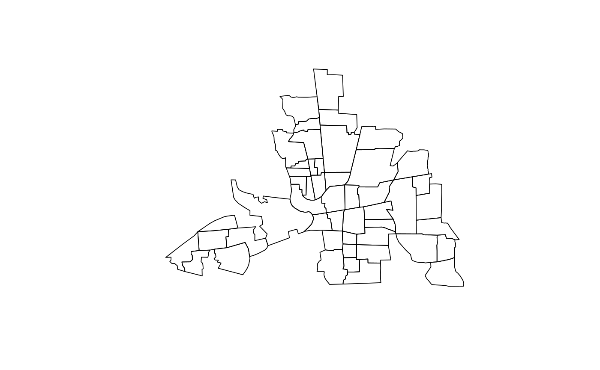

The columbus data frame has 49 rows and 22 columns. Unit of analysis: 49 neighbourhoods in Columbus, OH, 1980 data. In addition the data set includes a polylist object polys with the boundaries of the neighbourhoods, a matrix of polygon centroids coords, and col.gal.nb, the neighbours list from an original GAL-format file. The matrix bbs is DEPRECATED, but retained for other packages using this data set.
columbus
This data frame contains the following columns:
AREA computed by ArcView
PERIMETER computed by ArcView
COLUMBUS_ internal polygon ID (ignore)
COLUMBUS_I another internal polygon ID (ignore)
POLYID yet another polygon ID
NEIG neighborhood id value (1-49); conforms to id value used in Spatial Econometrics book.
HOVAL housing value (in \$1,000)
INC household income (in \$1,000)
CRIME residential burglaries and vehicle thefts per thousand households in the neighborhood
OPEN open space in neighborhood
PLUMB percentage housing units without plumbing
DISCBD distance to CBD
X x coordinate (in arbitrary digitizing units, not polygon coordinates)
Y y coordinate (in arbitrary digitizing units, not polygon coordinates)
NSA north-south dummy (North=1)
NSB north-south dummy (North=1)
EW east-west dummy (East=1)
CP core-periphery dummy (Core=1)
THOUS constant=1,000
NEIGNO NEIG+1,000, alternative neighborhood id value
Anselin, Luc. 1988. Spatial econometrics: methods and models. Dordrecht: Kluwer Academic, Table 12.1 p. 189.
The row names of columbus and the region.id attribute of polys are set to columbus$NEIGNO.
All source data files prepared by Luc Anselin, Spatial Analysis Laboratory, Department of Agricultural and Consumer Economics, University of Illinois, Urbana-Champaign, http://sal.agecon.uiuc.edu/datasets/columbus.zip.
if (requireNamespace("rgdal", quietly = TRUE)) { library(rgdal) columbus <- readOGR(system.file("shapes/columbus.shp", package="spData")[1]) plot(columbus) }#> OGR data source with driver: ESRI Shapefile #> Source: "/home/jn/Documents/spData/inst/shapes/columbus.shp", layer: "columbus" #> with 49 features #> It has 20 fields #> Integer64 fields read as strings: COLUMBUS_ COLUMBUS_I POLYIDif (requireNamespace("spdep", quietly = TRUE)) { library(spdep) col.gal.nb <- read.gal(system.file("weights/columbus.gal", package="spData")[1]) }#> Error: package ‘spData’ required by ‘spdep’ could not be found